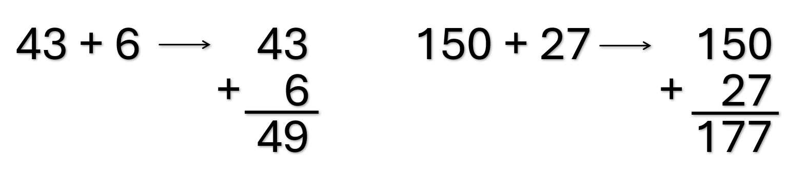
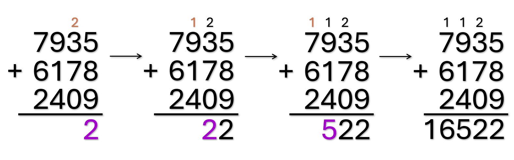

Adding Numbers with Two or More Digits
To add numbers with two or more digits, we will add using columns. To do this, write one number below the other, while making sure the place values line up.
Then add the numbers one column at a time.
What Happens When there are Numbers that have More Digits Than Others?
When that happens, don't panic, we just write the numbers the same way as when both numbers have the same number of digits.
Then add the numbers one column at a time
For the columns that don't have any numbers to add, we simply bring it down. We can also think of it as the number plus an invisible 0.
Regrouping
Sometimes when we add numbers in a column, the sum is greater than 9. When that happens we do what is called regrouping.
This can happen on any column or on more than one column in an addition problem.
How to Regroup
- Take the sum and regroup into the tens and ones places
- Write down the ones digit
- Write the tens digit on top of the next column. This is called carrying over.
- Move on to adding the next column. Don't forget to add the number that was carried over.
- If the sum for that column is greater than 10, repeat the steps.

This is what regrouping in multiple columns looks like.
